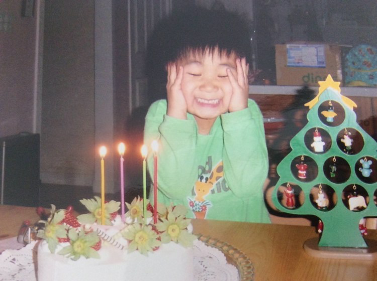

2002年北海道生まれ。
6歳からバレエを始め、14歳で出場したバレエコンクールでスイスチューリッヒダンスアカデミーの年間フルスカラシップを頂き、14歳からスイスチューリッヒダンスアカデミーに入学。4年間学び18歳で卒業。
2021年夏にクロアチア国立バレエ団に入団。現在入団して2年目。
プロフィール
誕生日 : ２００２年１２月
身長 : 180cm
趣味、特技 : 手芸、料理
血液型 : A型